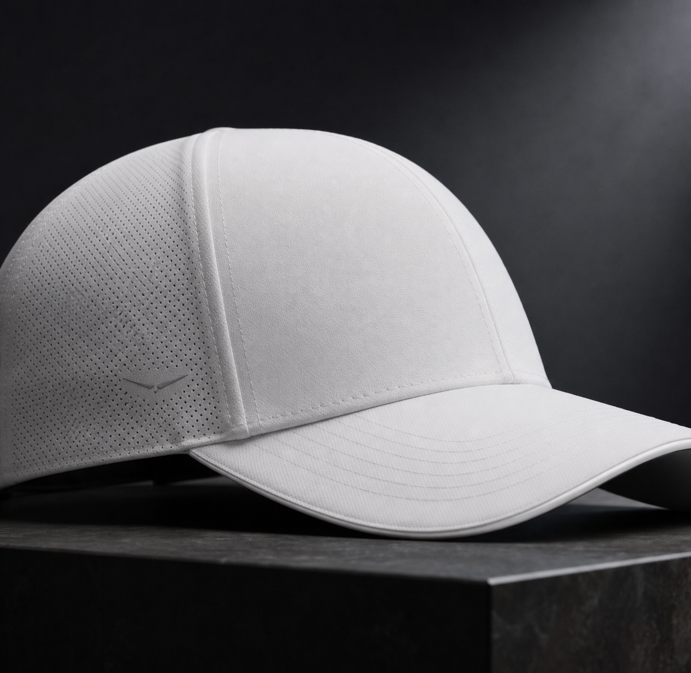

Private Access
First releases, new colorways, and private previews—announced quietly.

No. 01
Headwear
Structure without excess.
Explore Hats
No. 02
Polos
Performance, quietly expressed.
Explore Polos
No. 03
Pants
Movement, tailored.
Explore Pants
Beyond the round.
Technical performance. Considered for everything after.